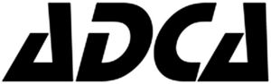

Trade Mark Journal No.2025/032 8 August 2025
WO0000001866023 (6,7,9,11)
Office of origin: European Union Intellectual Property Office (EUIPO)
Date of International Registration:28 February 2025
Date of designation in the UK:
28 February 2025

International priority date claimed: 30 August 2024
(European Union Intellectual Property Office (EUIPO))
(019073556)
- Class 6
- Fittings of metal for pipes; fittings of metal for compressed air ducts; pipes, tubes and hoses, and fittings therefor, including valves, of metal; high pressure metal cylinders [containers]; fittings of metal for compressed air lines; structures and transportable buildings of metal; strain relief clips of metal; pressure actuated rings [metal]; pressure filled rings [metal]; fittings of metal for compressed air ducts; metal gas pipe parts; containers of metal for compressed gas or liquid air; tanks of metal; tanks of metal for the storage of compressed gases; drain traps [valves] of metal; tubbing of metal; water-pipe valves of metal; check valves of metal [other than parts of machines]; check valves of metal [other than parts of machines]; drain traps [valves] of metal; valves of metal other than parts of machines including those from alloy steel and titanium; manually operated metal valves; metal valves for controlling the flow of fluids in pipelines; metal valves for controlling the flow of gases in pipelines; valves of metal, other than parts of machines; parts, fittings and components for all of the aforesaid goods.
- Class 7
- Fittings for engine boilers; actuators for dampers; actuators incorporating a gear mechanism for pipeline valves; actuators for valves; hydraulic valve actuators; pneumatic valve actuators; variable speed drives for machines; electrical drives for machines; linear actuators; pneumatic or hydraulic linear actuators, other than for land vehicles; pumps [parts of machines, engines or motors]; self-regulating pumps [machines], other than for the delivery of fuel at filling stations; pumps [machines], [parts of machines, engines or motors]; aerating pumps; air pumps; compressed air pumps; fluid pumps; pressure pumps; pumps for the extraction of gases [machines]; pumps for the extraction of liquids [machines]; pumps for the extraction of vapour [machines]; pneumatic pumps for the supply of liquefied gases; water swivels [hydraulic couplings]; compressors as parts of machines, motors and engines; compressors for gases; compressors for recovering and recycling refrigerant gases; steam condensers [parts of machines]; pressure controllers [valves] being parts of machines; de-aerators for feedwater; traps for dust [part of machines]; filters being parts of machines; filters being parts of machines or engines; injectors for engines; injectors for machines; injectors for engines; joints [parts of engines]; joints for tubes (metal -) [parts of machines]; filters for gases [machines]; motors, other than for land vehicles; steam pressure variation engines; electric motors for heating installations; electric motors, and their parts, not for land vehicles; motors, electric, other than for land vehicles; heat exchangers [parts of machines]; steam traps; pressure reducers [parts of machines]; regulators [parts of machines]; pressure regulators [parts of machines]; water separators; condensate separators; separators for liquids; separators for separating solids from liquids; centrifugal blowers; industrial blowers; valves; valves [parts of machines]; valves operated automatically by hydraulic control; valves operated automatically by pneumatic control; valves operated by changes in pressure; suction valves for gas compressors; compressed air switch valves; regulators [parts of machines]; automatic inlet control valves for reciprocating air compressors; pump control valves; vacuum control valves [parts of engines]; vacuum control valves [parts of machines]; dispensing valves being machine parts; dosing valves [parts of machines]; mechanically operated stoppers for use in gas well applications; pressure valves [parts of machines]; sludge valves being parts of machines; pressure controllers [valves] being parts of machines; stop valves [parts of machines]; waste gas return valves [parts of machines]; safety valves [parts of machines]; metal safety valves [parts of machines]; pressure reducers [parts of machines]; valves [mechanical] for regulating fluid flow; parts, fittings and accessories for all of the abovementioned goods.
- Class 9
- Push-on accumulators; programmable control apparatus; wireless communication apparatus; temperature control apparatus [electric switches] for machines; monitoring control apparatus [electric]; remote control apparatus; water level detection apparatus; measuring apparatus; temperature measuring apparatus for industrial use; measuring, detecting, monitoring and controlling devices; vapour monitoring apparatus for the detection of leaks; liquid level monitoring apparatus; remote monitoring apparatus; temperature logging apparatus; heat regulating apparatus; electrical test apparatus; apparatus and instruments for controlling electricity; regulating apparatus, electric; safety monitoring apparatus [electric]; electric motor checking [monitoring or supervision] apparatus; apparatus for analysing gases; temperature control apparatus [thermostats] for machines; temperature controlling apparatus for machines; apparatus, equipment and instruments for controlling, counting, monitoring, communicating with and measuring and reporting, all remotely, related to the efficiency, performance of industrial systems and steam production systems; mobile apps; electric actuators; pressure indicator plugs for valves; electrical and electronic components; liquid level switches; pressure controllers [gauges]; process control digital controllers; controllers and regulators; programmable logic controllers; remote controls; wireless controllers to remotely monitor and control the function and status of other electrical, electronic, and mechanical devices or systems; wireless controllers to remotely monitor and control the function and status of security systems; industrial automation controls; valves (electric controls for automatically operating -); valves (electronic controls for automatically operating -); industrial controls incorporating software; valves (remote controls for automatically operating -); thermal controls [thermostats]; pressure-to-current converters; measuring devices; navigation, guidance, tracking, targeting and map making devices; data loggers and recorders; testing and quality control devices; liquid dosage devices that measure the amounts to be dispensed; data processing equipment and accessories (electrical and mechanical); control stations (remote, electric or electronic -); electric flow meters; electronic temperature recorders, other than for medical use; water level indicators; temperature indicators; temperature control apparatus [thermostats]; boiler control instruments; measuring instruments; monitoring instruments; instruments for temperature control; instruments for measuring levels of fluids; pressure switches; temperature switches; push button switches (electrical -); temperature limiters for machines; pressure gauges; high pressure manometers; flowmeters; liquid level meters; pressure measuring apparatus; water temperature gauges; electricity measuring instruments; microcontrollers; electronic temperature monitors, other than for medical use; gauges; valve operators [electric controls]; electronic notice boards; control panels [electricity]; electronic indicator panels; electric control panels; distribution boards [electricity]; push button panels (electrical -); electronic indicator panels; electrical control boards; pressure indicators; pressure gauges; water temperature regulators; air temperature sensors; coolant-temperature sensors; electronic control sensors for motors; liquid level sensors; pressure sensors; temperature sensors; sensors for use in the control of engines; sensors, detectors and monitoring instruments; machine control software; reporting software; industrial software; industrial automation software; process controlling software; software for monitoring, analysing, controlling and running physical world operations; industrial process control software; testing probes, other than for medical purposes; thermistor probes; logic probes; probes for testing integrated circuits; electric timers; programmable timers; time switches, automatic; thermometers, not for medical purposes; thermostats; pressure transducers; pressure transmitters; monitoring units [electric]; multiple control signal transmission units; process controlling apparatus [electronic]; thermostatically controlled valves; electric control valves; solenoid valves [electromagnetic switches]; electrical circuit testers; electronic numeric displays; parts, fittings and accessories for all of the aforesaid.
- Class 11
- Safety fittings for gas pipes; flues for heating and ventilating apparatus and parts therefor; steam accumulators; vacuum distillation apparatus for industrial use; steam generating apparatus; pressure supervision apparatus [safety apparatus for water pipes]; pressure supervision apparatus [safety apparatus for water apparatus]; pressure supervision apparatus [safety apparatus for gas pipes]; industrial treatment apparatus and installations; apparatus for vapour producing installations; cooling installations for liquids; valves (temperature sensitive controls for automatically operating -) [parts of heating installations]; gas condensers, other than parts of machines; flues and installations for conveying exhaust gases; pressure controllers [regulators] for water pipes; pressure controllers [regulators] for gas pipes; control devices [thermostatic valves] for heating installations; igniters; heating, ventilating, and air conditioning and purification equipment (ambient); sterilization, disinfection and decontamination equipment; refrigerating and freezing equipment; filters for cleaning gases [parts of household or industrial installations]; filters for fume extractors; air and water filters for industrial installations; filters for use with apparatus for steam generating; air and water filters for industrial and household use; steam generators; steam boilers, other than parts of machines; humidifiers; humidifiers; steam generating installations; steam generating installations; water purification, desalination and conditioning installations; cooling installations for fluids; heating installations for fluids; sanitary and bathroom installations and plumbing fixtures; sanitary installations, water supply and sanitation equipment; mechanisms for controlling fluid level in tanks [valves]; heat exchangers for the removal of flue gases; heat exchangers for the removal of exhaust gases; heat exchangers, other than parts of machines; air valves for steam heating installations; heat regenerators; recuperators for pre-heating combustion air in heating systems by the use of hot flue gas; water pressure reducers [safety accessories]; water pressure reducers [regulating accessories]; dampers [heating]; temperature regulators [thermostatic valves] for central heating radiators; draught dampers for preventing the spread of gases being parts of ventilation and heating installations; draught regulators for preventing the spread of smoke being parts of ventilation and heating installations; draught dampers for preventing the spread of gases being parts of ventilation and heating installations; draught regulators for preventing the spread of smoke being parts of ventilation and heating installations; smoke release dampers being parts of ventilation and heating installations; pressure water tanks; hvac systems (heating, ventilation and air conditioning); steam generating apparatus; steam superheaters [for industrial purposes]; bibcocks [plumbing fittings]; mixer taps for water pipes; mixer taps for water pipes; taps for pipes and pipelines; taps for regulating gas flow; valves [plumbing fittings]; pipe line cocks; manually-operated plumbing valves; temperature control valves [parts of water supply installations]; level control valves; pressure relief valves [safety apparatus] for water apparatus; pressure relief valves [safety apparatus] for water pipes; stop cocks for regulating water; water regulating valves [regulating accessories]; stop valves for regulating water; stop valves for regulating gas; stop valves being safety apparatus for gas apparatus; stop valves being safety apparatus for water apparatus; steam valves; pressure relief valves [safety apparatus] for gas pipes; water control valves [level controlling] in cisterns; taps; level controlling valves in tanks; level controlling valves in tanks; thermostatic valves; thermostatic valves [parts of heating installations]; compressed air ventilators; draught regulators for preventing the spread of smoke being parts of ventilation and heating installations; draught regulators for preventing the spread of smoke being parts of ventilation and heating installations; parts, components and fittings for the aforesaid goods.
VALSTEAM ADCA ENGINEERING, SA
Representative: RCF - PROTECTING INNOVATION, S.A., Rua Tomás Ribeiro 45 - 2º, P-1050-225 Lisboa, PORTUGAL